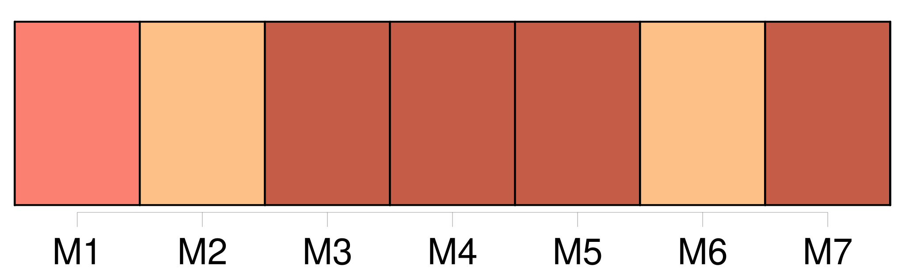
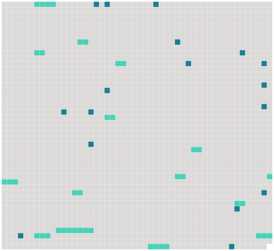

Longueur nb maillons : 31 mentions |
 |
J'étais en Normandie, chez [un parent non marié] , Jules de Banneville, seul avec [lui] , [sa] bonne, un valet et un garde dans [son] château seigneurial. [10 phrases]
[Mon cousin] leva la tête : « Il ne fera pas chaud en se couchant, » dit [-il] [3 phrases] [Mon compagnon] reprit : « Alors c'est ce soir la messe de minuit. [1 phrases]
» [4 phrases] [Mon cousin] se tourna vers moi : « Si tu veux, dit [-il] , nous irons tout à l'heure voir ces pauvres gens. » [Il] voulait parler de la famille du vieux, son petit-fils, âgé de cinquante-huit ans, et sa petite belle-fille, d'une année plus jeune. [6 phrases]
La bonne, partie depuis longtemps, reparut : « Je vais à la messe, [monsieur] [3 phrases] demanda [Jules] : cette messe de Noël est bien curieuse aux champs. [7 phrases] En approchant du hameau, [Jules] se ressouvint des Fournel. --« Voici leur baraque, dit [-il] : entrons!!
» [1 phrases]
» [10 phrases] [Jules] me dit : « Sortons!! [3 phrases] « Ils veillent leur mort, dit [mon cousin] [10 phrases]
Au bout de quelques minutes de silence, [mon cousin] demanda : « Eh bien, Anthime, votre grand-père est mort? --Oui, [mon pauv 'monsieur] , il a passé tantôt. [8 phrases]
[Mon cousin] , voyant leur trouble, insista. [1 phrases] --A rien, dit [Jules] , mais ça se fait tous les jours ; pourquoi ne voulez -vous pas le montrer?? [4 phrases] Comme les petits-enfants du mort ne remuaient toujours pas, et demeuraient face à face, les yeux baissés, avec cette tête de bois des gens mécontents, qui semble dire : « Allez -vous -en, » [mon cousin] parla avec autorité : « Allons, Anthime, levez -vous, et conduisez -nous dans sa chambre.
» Mais l'homme, ayant pris son parti, répondit d'un air renfrogné : « C'est pas la peine, il n'y est pu, [monsieur] [5 phrases] [Jules, indigné, tremblant de colère] , cria : « Pourquoi ne l'avez -vous pas laissé dans son lit, manants que vous êtes??
» [1 phrases] D'puis qu'il est si malade, j'couchons par terre ; c'est dur, [mon brave monsieur] , dans ces temps ici. [3 phrases]
.. » |
 |
Il est possible de télécharger la ressource sur la page Ortolang |
Si vous avez des questions ou vous voyez des erreurs, merci d'envoyer un mail à silvia.federzoni89@gmail.com |